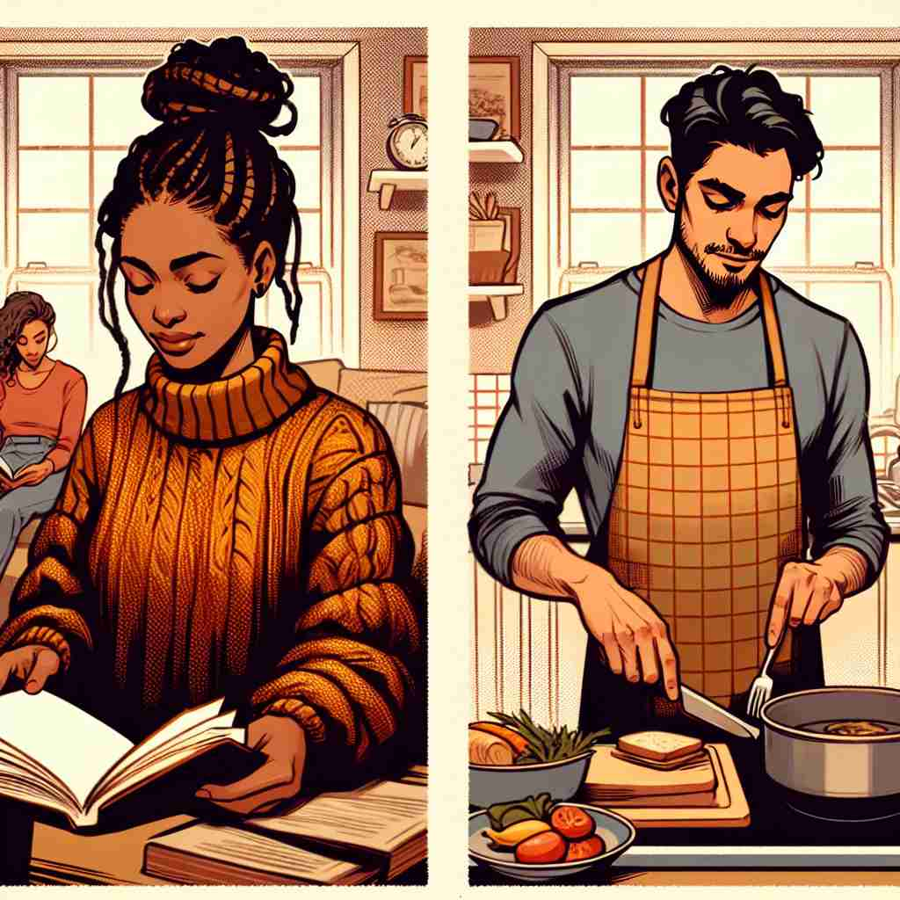

💬 She enjoys music whilst reading. 她在阅读的时候喜欢听音乐。

💬 She enjoys music whilst reading a book. 她在阅读书籍时喜欢听音乐。
💬 She enjoys music whilst reading. 她在阅读的时候喜欢听音乐。
💬 She enjoys music whilst reading a book. 她在阅读书籍时喜欢听音乐。
🧠 "Whilst" 的核心含义是表示时间上的同时发生。通过联想两件事情在同一时间段内发生，你可以轻松记住它的基本用法。从这个核心含义，它进一步延伸出表示对比或对照的用法，就像两件事同时存在，但存在差异。记住 "while" 的同时性，再加上 "-st" 这个古英语后缀，就能形成 "whilst" 这个更正式、略显古老的表达。
🔈 [waɪlst]
🗝️ conj. during the time that; at the same time as 在……期间；与……同时
🎭 在一个舒适的客厅里，一家人围坐在一起。妈妈正在织毛衣，同时，她的两个孩子在地毯上拼拼图。这幅场景完美呈现了'whilst'的第一个含义：在…的同时。
💬 He read the newspaper whilst having breakfast. 他边吃早餐边看报纸。
🌳 该单词由 "while"（当……时）加上古英语后缀 "-st" 构成，是 "while" 的一种古老或较正式的变体，表示同样的意思，即 "同时，当……时"。
💡 记忆 "whilst" 可以通过将其与 "while" 联系起来，联想古英语形式的词尾 "-st"，记住其正式和文学的用法，便于理解句子中的上下文。
🗝️ conj. although; whereas 尽管；而
🎭 在一个大学的讨论课堂上，两位同学正在讨论看法。一个同学说："我们应该多关注气候变化，因为它影响我们所有人。" 另一个同学回应："whilst 我同意这很重要，我们也必须考虑经济发展的必要性。"这个场景展示了'whilst'作为'尽管；但是'的对比连接词用法。
💬 I enjoy sweet foods, whilst my sister prefers savory dishes. 我喜欢甜食，而我姐姐更喜欢咸味菜肴。
🤔 从时间上的同时性延伸到对比或对照的关系